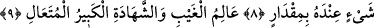
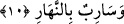

ALLAH HER ŞEYİ BİLİR
8. Allah, her dişinin neye gebe olduğunu, rahimlerin neyi eksiltip neyi artırdığını
bilir. O’nun katında her şey bir ölçü iledir.
9. O, görülmeyeni de görüleni de bilir; büyüktür, yücedir.
10. Sizden, sözü gizleyenle onu açığa vuran, geceleyin gizlenenle gündüzün
yürüyen (onun ilminde) eşittir.
Sadece “Allah, her dişinin neye gebe olduğunu,” Yani taşıdığı şeyi ya da rahmin
yüklendiği, çocukların erkek-dişi, tam-eksik, güzel-çirkin, uzun-kısa, saîd-şakî, Allah
dostu-Allah düşmanı, cömert-cimri, âlim-câhil, akıllı-akılsız, değerli-alçak, iyi huylu-
kötü huylu ve diğer şu anda mevcud bulunan ve ileride olması muhtemel özelliklere
sahip olduklarını “ve rahimlerin neyi eksiltip neyi artırdığını bilir.” Yani bütün
rahimlerdeki eksik ve fazlayı ya da rahimlerin eksilttiği ve artırdığı şeyleri bilir.
Rahim, çocuğun ana karnında oluşup büyüdüğü yuvadır. Bilesin ki, kadın rahmi
birtakım kaslarından, damar ve sinir tellerinden meydana gelmiş olup sinir tellerinin
başı beyindedir. Rahim bir kese şeklindedir.
Müfessirler, rahmin eksiltip artırdığı şeyin ne olduğu konusunda ihtilâf etmiştir. Bunun
çocuğun bedeni olduğu söylenmiştir. Çünkü rahimdeki çocuk bazen büyük bazen küçük,
bazen tüm organları yerinde bazen eksik olur.
Yine rahmin eksiltip artırdığı şeyin çocuğun doğum müddeti olduğu söylenmiştir.
Çünkü herkesçe kabul edildiği üzere en az doğum süresi altı aydır. Genellikle bu dokuz
ay olur. Ebû Hanîfe’ye göre iki seneye, Şâfiî’ye göre dört seneye, Mâlik’e göre ise beş
seneye kadar uzar
Hasan Basrî’den rivâyet edildiğine göre âyetteki “azaltma” kadının sekiz ayda veya
daha az bir zamanda, “artırma” ise dokuz aydan daha fazla sürede doğum yapmasıdır.
Yine ondan rivâyet edildiğine göre “azaltma” vakti gelmediği için düşük doğan cenin
için, “artırma” ise vakti tamamlandığında doğan çocuk için kullanılmıştır.
Artırma ve azaltma ifadelerinin, çocuk sayısıyla ilgili olduğu da söylenir. Çünkü
rahim, bir, iki, üç ve dört çocuğu içine alabilir.
Rivâyete göre Medine fukahâsından olan tâbiî Şüreyk, anne karnında dördüzlerin